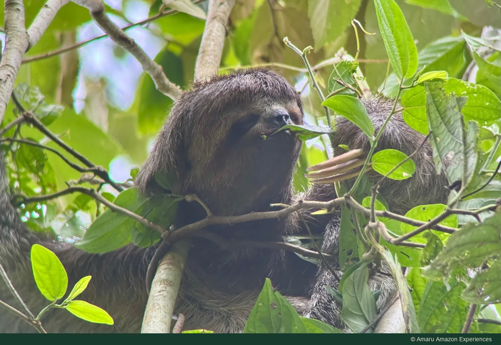

Puerto Nariño · Amazonía colombiana
Caminatas por la selva y avistamiento de fauna
Mira hacia arriba, camina despacio y descubre la vida entre las hojas.
Consultar con Amaru por WhatsApp ↗
Sobre esta experiencia
Explora la selva a pie y detente a observar los árboles, las plantas y la vida entre las hojas. A diferencia de la salida dedicada a las aves, esta caminata diurna ofrece una mirada más amplia al bosque. La ruta depende de tus intereses y de las condiciones locales; observa la fauna a distancia, sin tocar ni alimentar animales.
El Amazonas colombiano reúne distintos ambientes de bosque, entre ellos zonas que se inundan y otras de tierra firme. Esa variedad ayuda a comprender la vida vegetal y animal de la región. Caminar invita a mirar el ecosistema en conjunto: raíces, hojas, sonidos y rastros pueden despertar tanto interés como un animal que aparece por un instante entre los árboles.
Date permiso para ir despacio y reparar en pequeños cambios del entorno. Pregunta por lo que observas y deja las plantas y los animales en su lugar. Esta es la propuesta diurna de Amaru para acercarse a la vida del bosque; si tu interés principal son las aves o la selva después del anochecer, puedes consultar esas experiencias por separado.
Fuentes del contexto del destino: Parques Nacionales ↗
Qué explorar
- Senderos y plantas amazónicas
- Observación de fauna cuando sea posible
- Distancia y dificultad acordadas juntos
Antes de salir
- Momento del día
- DIURNO
- Duración
- Confirma con Amaru la duración y el punto de encuentro para tus fechas.
- Exigencia física
- A confirmar según el recorrido
Los niveles son orientativos. El terreno, el agua, el clima y las características del grupo pueden cambiar la exigencia.
Prepara calzado para terreno húmedo, ropa fresca que proteja la piel, agua, protección contra insectos y una forma de mantener secas tus pertenencias. Confirma con Amaru el sendero, la distancia, el terreno y la dificultad. Conversa sobre niños o necesidades de movilidad antes de elegir la ruta y pregunta qué calzado o equipo se requiere o se facilita.
¿Qué debo confirmar?
Pregunta por la ruta, la salida, los requisitos del grupo, el idioma del guía, el equipo, los traslados y los servicios incluidos. Comparte tus fechas y número de viajeros, y revisa el precio total y las condiciones de cancelación antes de confirmar.
Las rutas dependen del nivel del agua, el clima y las condiciones locales. Los avistamientos de fauna no se pueden garantizar.
AMARU AMAZON EXPERIENCES
Planea esta experiencia
Elige esta experiencia por separado o conversemos sobre cómo integrarla a tu viaje. Una consulta no confirma una reserva y esta web no recibe pagos.
Consultar con Amaru por WhatsApp ↗